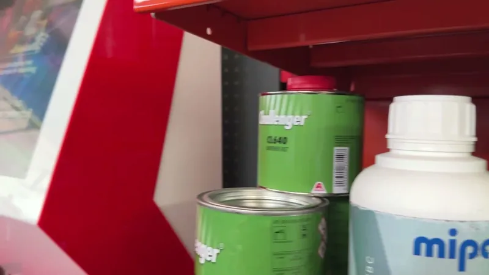
Mieszalnia lakierów
Lakier przygotowany na miejscu, w sklepie przy Górnośląskiej.
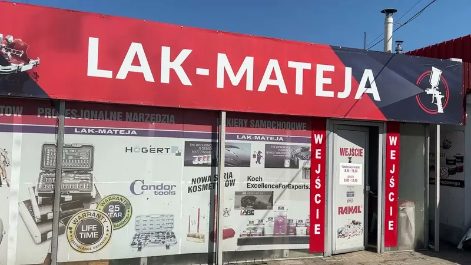
ul. Górnośląska 15, Pszczyna
Mieszalnia lakierów, lakiery samochodowe i przemysłowe, napełnianie puszek spray i wyposażenie warsztatów. Masz pytania? Zadzwoń, doradzimy.
Czynne: pon.-pt. 8:00-16:00, sob. 8:00-12:00
Wszystko dla lakiernika i warsztatu w jednym miejscu. Przesuń karty, żeby zobaczyć całą ofertę.

Lakier przygotowany na miejscu, w sklepie przy Górnośląskiej.
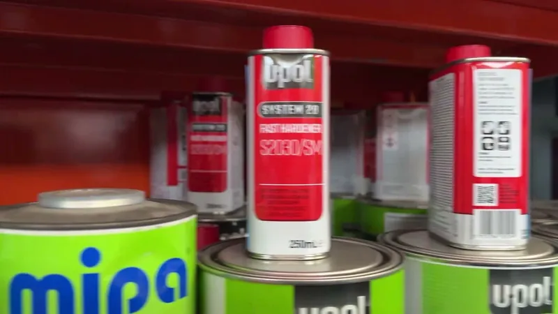
Lakiery Valspar-DeBeer i DuPont oraz chemia blacharsko-lakiernicza.
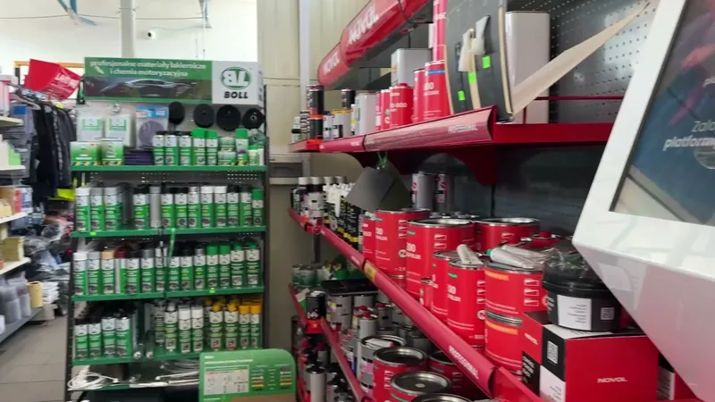
Lakiery do zastosowań przemysłowych, doradzimy przy wyborze.
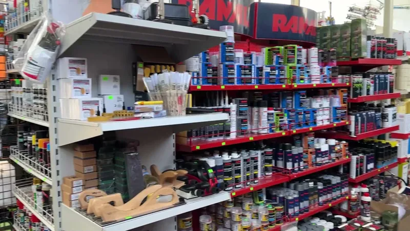
Lakiery i impregnaty do jachtów oraz żaglówek.
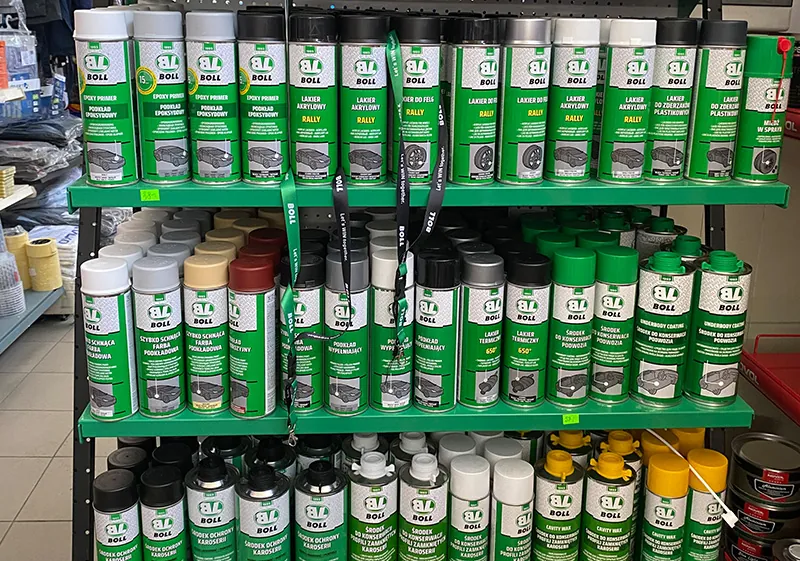
Napełniamy puszki spray lakierem.
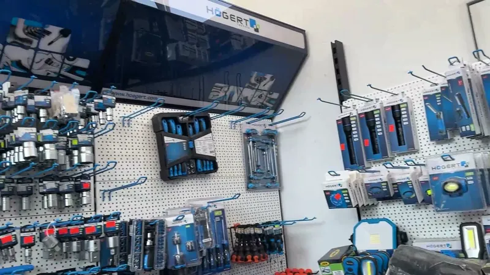
Narzędzia i odzież BHP Högert Technik, elektronarzędzia, materiały ścierne.
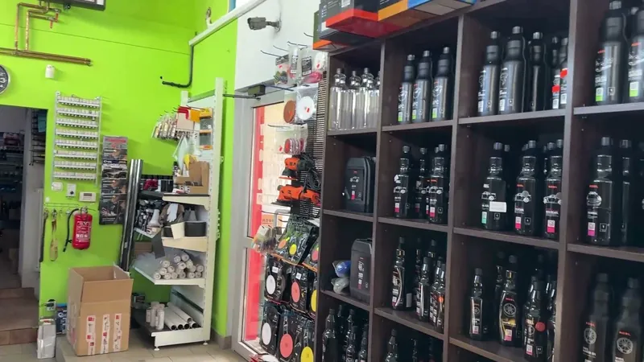
Mycie i dekontaminacja, felgi i opony, pasty polerskie, szyby, pielęgnacja.
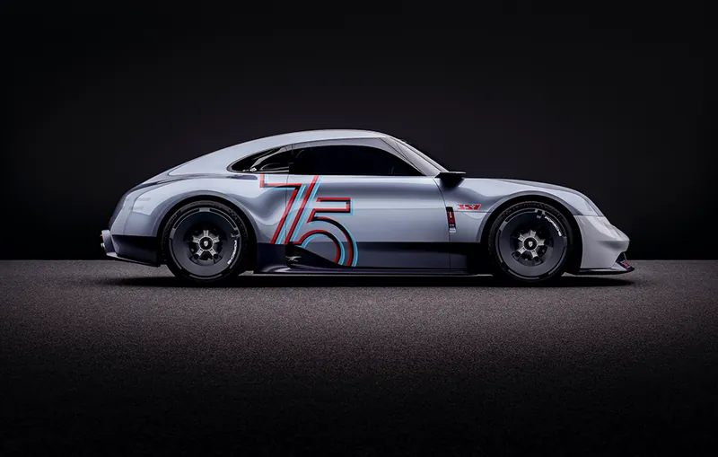
Folie do przyciemniania, folie ochronne PPF i narzędzia do aplikacji.
Środki Dinitrol i Ranal do podwozia, karoserii i profili zamkniętych. Zamówisz w naszym sklepie internetowym, wysyłka w 24 h.
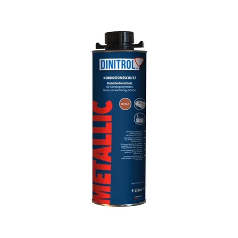
Konserwacja podwozia
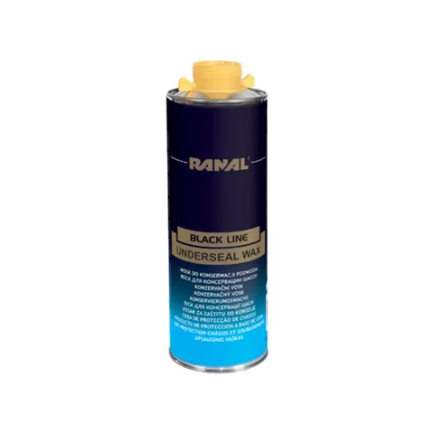
Konserwacja podwozia

Konserwacja podwozia
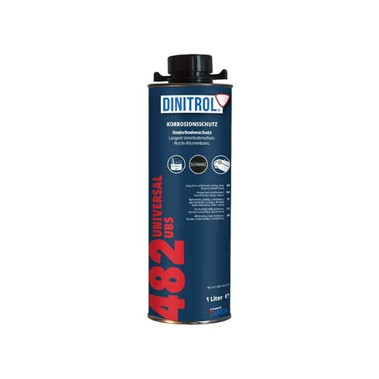
Konserwacja podwozia
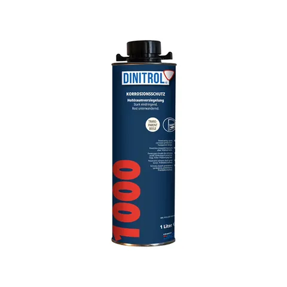
Profile zamknięte
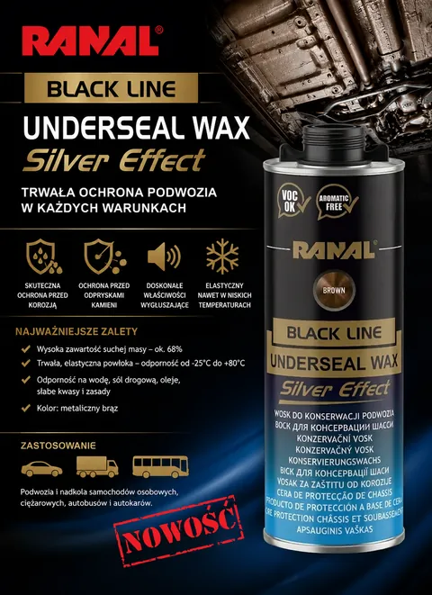
Konserwacja podwozia
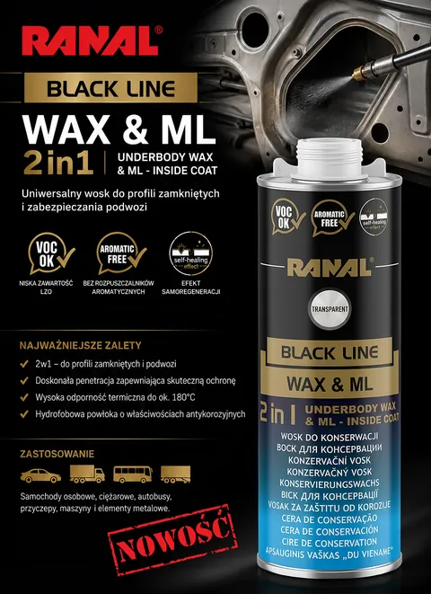
Profile zamknięte
Ceny brutto ze sklepu konserwacja-pojazdu.pl. Płatność kartą lub przelewem, zwrot towaru możliwy.
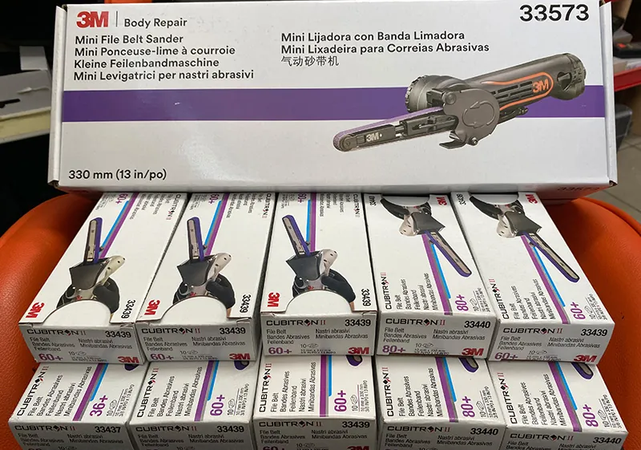
Promocja
Kupując 10 opakowań pasków Cubitron 3M w cenie 813 zł netto, szlifierkę 3M model 33573 dostajesz za 1 zł.
Zapytaj: 32 210 10 61Naszym głównym profilem jest sprzedaż lakierów samochodowych i przemysłowych firm Valspar-DeBeer oraz DuPont. Mamy też lakiery i impregnaty do jachtów oraz żaglówek, a do tego całą chemię blacharsko-lakierniczą.
Zamówione produkty dowozimy bezpośrednio do serwisu klienta, stałym klientom za darmo.
Marki w ofercie: Valspar-DeBeer, DuPont, 3M, Högert Technik, ADBL, Dinitrol, Ranal, Novol
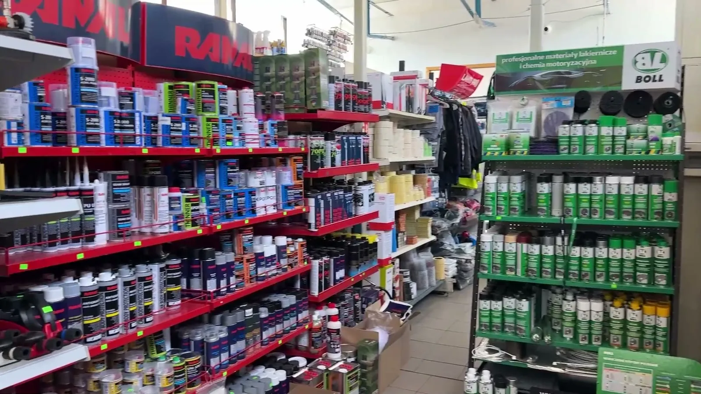
Tak wygląda u nas na miejscu. Przesuń zdjęcia.
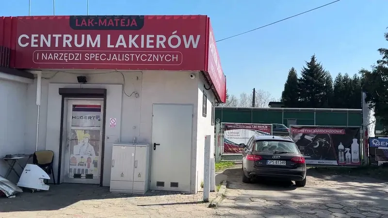
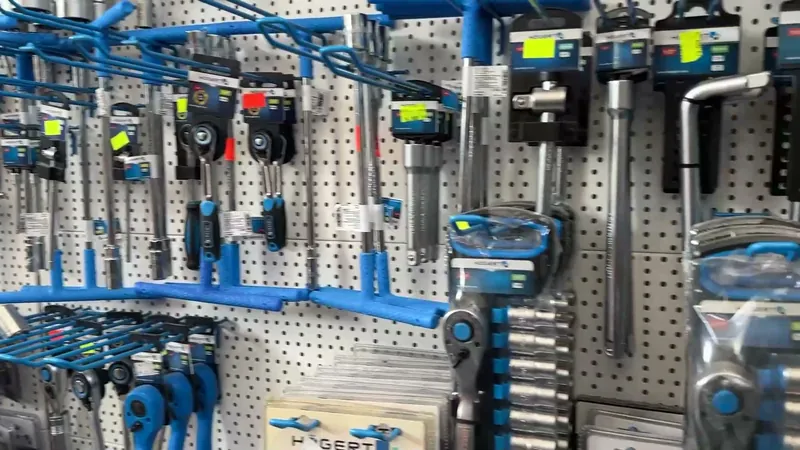
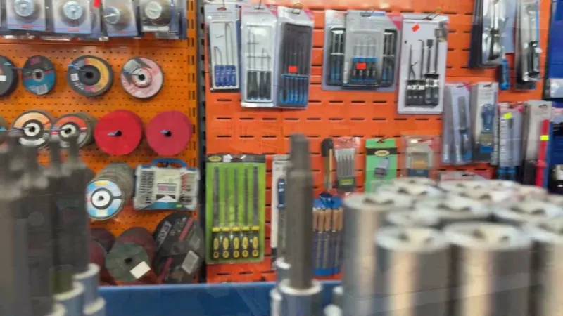
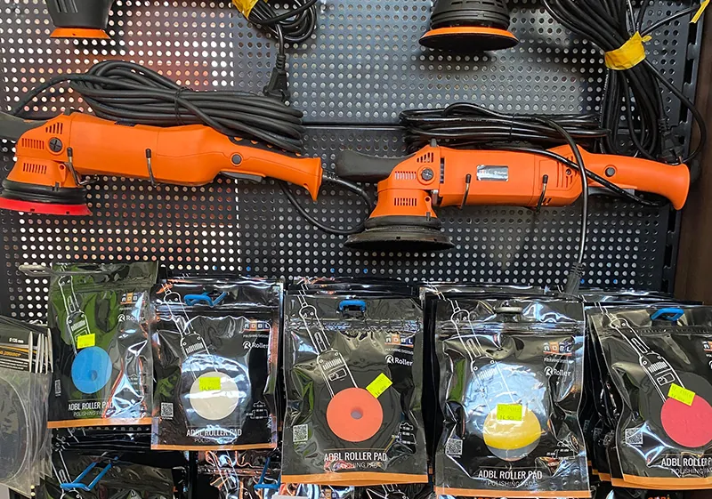
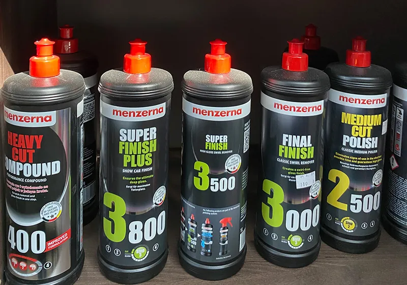
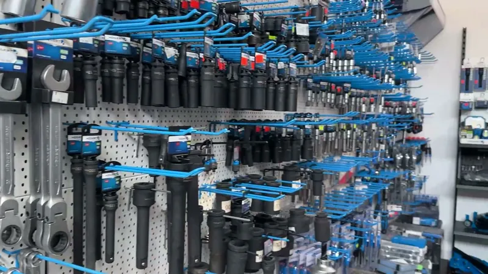
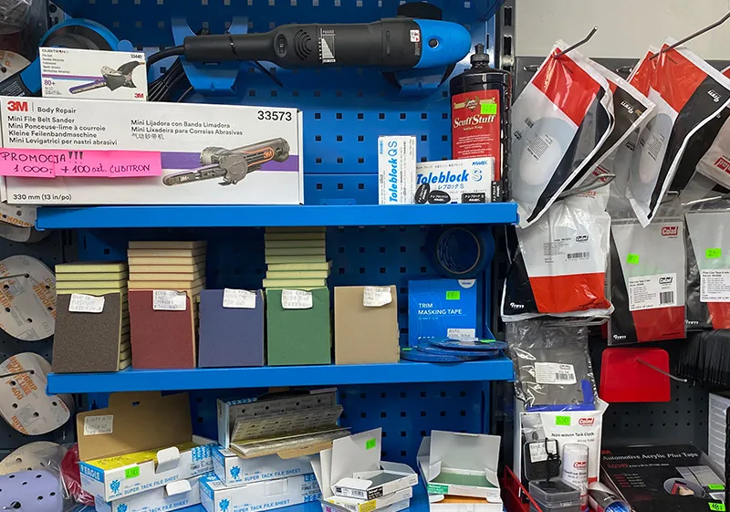
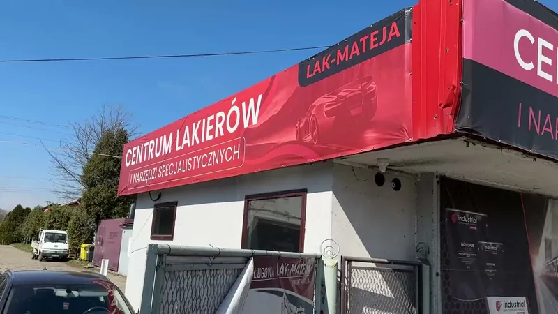
Usługi i wynajem minikoparki z operatorem.